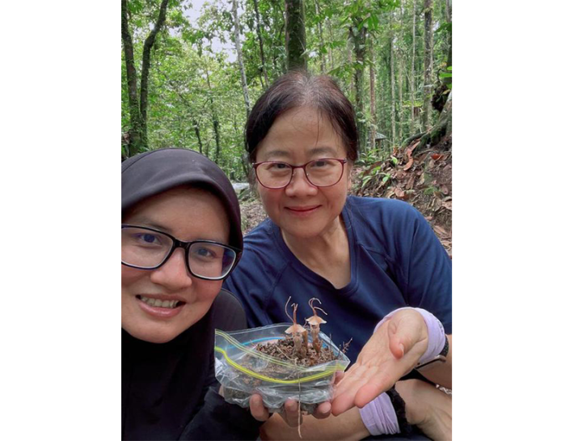

Despite its name, this is no light source for a woodland sprite. What you’re gazing at is a type of fairy lantern, an incredibly rare plant. Beyond its mystical appearance and whimsical name, the newly described species is unusual in that it gobbles up energy not from the sun, like most flora, but from fungi in the soil.
Thismia selangorensis was discovered by scientists in the lush Hulu Langat Forest Reserve in Malaysia. In 2023, naturalist Tan Gim Siew was stopping by to snap some photos in the forest, and noticed a wee, 4-inch-tall plant that had sprouted up in leaf litter near the roots of a riverside tree. During follow-up surveys of the area, fewer than 20 individuals of T. selangorensis were counted overan area of around 1.5 square miles, according to a paper recently published in PhytoKeys. People have spent time in the area for decades—it’s a camping and picnic spot not far from the country’s capital of Kuala Lumpur—but the species hasn’t been officially documented until now.

TINY LANTERN: Researchers holding the petite Thismia selangorensis. Photo by Gim Siew Tan.
“This discovery shows that significant scientific finds are not limited to remote jungles; they can also be made in ordinary environments where constant human activity leaves little room for expectation,” said paper author Siti-Munirah Mat Yunoh, a plant taxonomist at the Forest Research Institute Malaysia, in a statement.
This petite plant belongs to the otherworldly Thismia genus, also called “fairy lanterns,” which includes 120 known species that gain energy from fungi in a parasitic relationship. Such plants, which are referred to as mycoheterotrophs, are highly elusive—they often dwell underground, and may only be visible if they’re flowering or fruiting. Mysterious members of this genus tend to live in undisturbed, shady forests within moist microhabitats full of leaf debris. Still, scientists have documented increasing numbers of Thismia species in recent years.
Read more: “7 of the World’s Strangest Plants”
Now, the study authors hope that researchers, government officials, and the public can collaborate to conserve T. selangorensis, which is classified as critically endangered. For example, plants that crop up near campsites and picnic areas might get accidentally stepped on or prove vulnerable to flooding. “The most important effort now is to raise awareness about this species so the public realizes that it exists—right here, in this small corner of the world, and nowhere else, at least for now,” Siti-Munirah said. “Understanding its presence is the first step toward ensuring that this extraordinary plant is not lost before many people even know it exists.”
Now, this tiny fairy lantern’s discovery could illuminate even nature’s tiniest components, inviting people to take a closer look. 
Enjoying Nautilus? Subscribe to our free newsletter.
Lead image: Gim Siew Tan